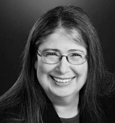

1. Ada Lovelace

Ada Lovelace was born in 1815 and died in 1852, she was born in London and was homeschooled by her mother and had several tutors. Her mother insisted that she was taught science and mathematics which went in her favour as she is now known as an English mathematician and writer. Ada is referred to as the first programmer because she had written notes that explained how the notion of a specific engine could transition calculation to computation. She is one of the famous women in technology and every second Tuesday in October is known as Ada Lovelace Day to celebrate the achievements of women in STEM careers.
2. Grace Hopper

Grace Hopper was born in 1906 and died in 1992, she was born in New York and attended Yale University in 1930 and eventually received a PH. D in mathematics. In 1943 she joined the Naval Reserve and retired in 1966. During the years as a Naval Reserve, Grace joined the Eckert-Mauchly Computer Corp in 1949 where she designed a compiler which translated programmer’s instructions into computer codes. In 1957, her division developed the first English language data processing complier. After retiring from the Naval Reserve, she was recalled helping standardise the navy’s computer languages and at the age of 79, she was known as the oldest officer in the navy before she retired in 1986. She has been given several awards, one of them being awarded by Barack Obama as the Presidential Medal of Freedom in 2016.
3. Annie Easley

Annie was born in 1933 and died in 2011, she was born in Birmingham, Alabama and attended Xavier University where she majored in pharmacy for around 2 years. Shortly after finishing University, she met her husband and they moved to Cleveland. This is where Annie’s life changed for the better. As there was no pharmaceutical school nearby, she applied for a job at the National Advisory Committee for Aeronautics (NACA) and within 2 weeks had started working there. She was one of four African Americans who worked there and developed and implemented code which led to the development of the batteries used in hybrid cars. She is well known for being one of the famous women in technology for encouraging women and people of her colour to study and enter STEM fields.
4. Mary Wilkes

Mary Wilkes was born in 1937 in Chicago and graduated from Wellesley College in 1959 with a degree in philosophy. She was told in the eighth grade by her geography teacher that she would be a computer programmer when she grew up. At the time Mary was unaware that this was going to become true. In her early years, she worked with computers such as the IBM 709 and IBM 704 for a year in 1959-1960. In 1961 she joined the digital computer group and contributed to the LNC development of TX-2, as she designed and wrote the operators manual for the final console design. She is known for helping develop the first personal computer and was also the first person to have a PC in her home.
5. Adele Goldberg
Adele Goldberg was born in 1973 in Ohio and received a bachelor’s degree in mathematics from the University of Michigan and later received a PH. D in information science from the University of Chicago in 1973. In the 1970s, Adele was a researcher at the Xero Palo Alto Research Centre (PARC) and was the only women among the group of men who built the Smalltak-80 together. The Smalltalk-80 was a programming language which they developed the infrastructure and design for so windows could overlap on display screens, or formally known as Graphical User Interface (GUI). Adele presented the Smalltalk system to Steve Jobs who implemented many ideas in the alto into his Apple products. Therefore, Adele Goldberg is known as one of the famous women in technology who inspired Steve Jobs creation of the first Apple computer as, without her, the Apple desktop environment may not look the way it does today.
6. Mary Keller

Mary Keller was born in 1913 and died in 1985 and was an American roman catholic religious sister. In 1958 she started at the National Science Foundation workshop in the computer science department at Dartmouth College which at the time was an all-male school. She teamed up with 2 other scientists to develop the BASIC computer programming language. In 1965 Mary earned her PH. D in computer science from the University of Michigan. She went on to develop a computer science department in a catholic college for women called Clarke College. For 20 years she chaired the department where she was an advocate for women in computer science and supported working mothers by encouraging them to bring their babies to class with them. She is known as one of the famous women in technology for being the first woman to receive a PH. D in computer science and Clarke University (Clarke College) have established the Mary Keller Computer Science Scholarship in her honour.
7. Radia Perlman
Radia was born in 1951 in New Jersey and attended Massachusetts Institute of Technology and learned programming for a physics class. She received a B.S and M.S in mathematics and a PH. D in Computer Science from MIT in 1988. In the 1970s Radia developed a child-friendly education language call TORTIS. The programming language was installed into a turtle and research was conducted on young children. In the 1980s Radia invented the spanning tree algorithm and the spinning tree protocol. The spinning tree algorithm transformed ethernet from a single wire CSMA into a protocol that could handle large clouds. Radia is known as the ‘mother of the internet’ and for creating STP which is fundamental for the operation of network bridges.
8. Katherine Johnson
Katherine Johnson was born in 1918 in West Virginia and was one of 3 black students to attended West Virginias graduate college. In 1937 she received a B.S in Mathematics and French from the State School. After getting married and having a family, a relative told her about open positions at the all-black computing section at the National Advisory Committee of Aeronautics (NACA) laboratory. The launch of the Soviet satellite sputnik change history along with Kathrine Johnson’s life as she was the one who manually run the same equations through her desktop that the machine used to ensure that they were safe to go before take-off. This was a very big responsibility for Kathrine as the astronaut’s lives were in her hands and were not taking off until they received the signal from her. The flight was a success and marked a turning point in the competition between the US and the Soviet Union in space. Kathrine is well known for this event and is one of the famous women in technology for co-authoring 26 research reports that provide mathematic equations for machines.
9. Karen Jones

Karen Jones was born in 1935 and died in 2007, she studied history and philosophy at Grinton college in Cambridgeshire from 1953 to 1956. In the 1960s she started to work on information retrieval (IR) and introduced the IDF term weighting which has been adopted by modern systems such as web search engines. She was a major figure in setting standards for a large proportion of the work in natural language processing (NPL) in the US and other countries. She taught many PhD students in computer speech and language the diverse areas of NPL and IR. She is well known for working on the IR and introducing the IDF term to produce natural language for the search engines that we use daily.
10. Elizabeth Feinler

Elizabeth was born in 1931 in West Virginia and was the first person in her family to attend University and receive an undergraduate degree from the West Liberty State College. Whilst working towards her PhD in biochemistry she discovered her love for data compilations when working at her part-time job. She decided not to carry on her PhD and from 1972-1989 she was a director of the network information systems centre at the Stanford research institute. The institute oversaw internet addresses and if you wanted a domain, you would have to go to Elizabeth. The network information centre was like the prehistoric google and by the late 1980s, the community had moved to the domain name system which helped lay the foundation for the modern internet. Elizabeth is well known for being one of the famous women in technology for helping the Stanford research institute transition to the domain name system and introducing the domain name protocol, she’s the one to thank for the dot coms, dot nets and dot govs used daily.